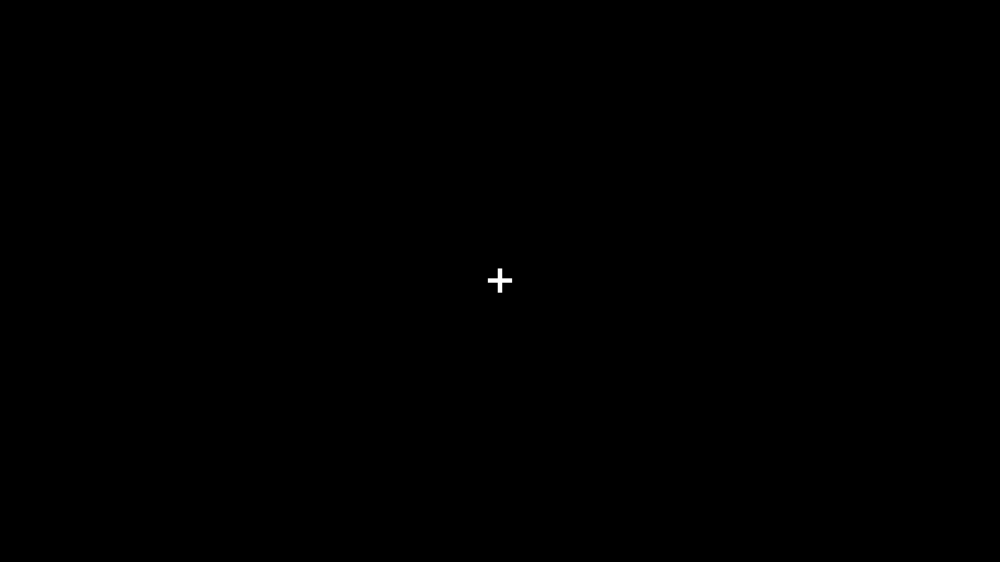
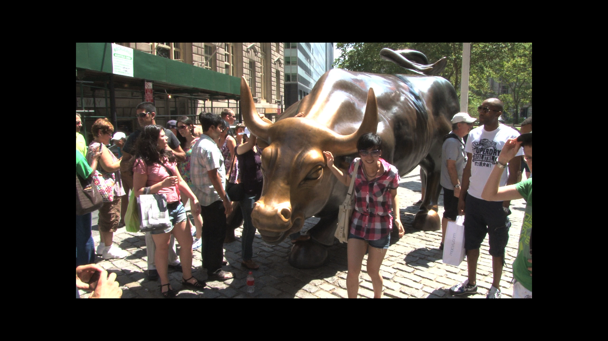
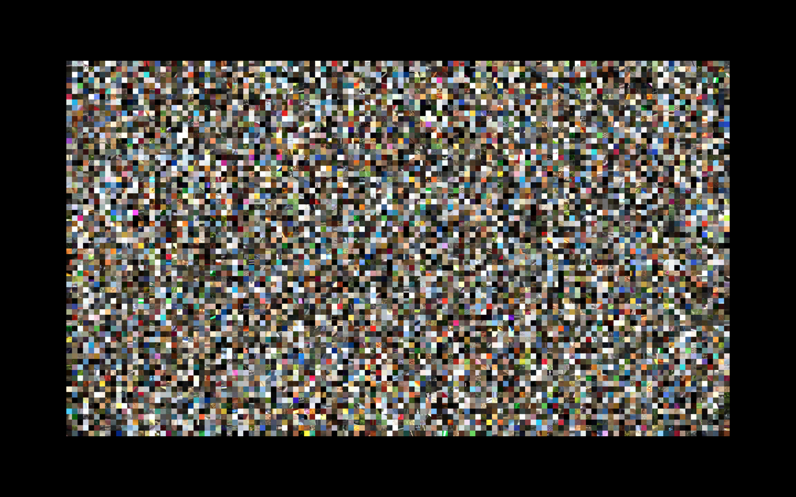
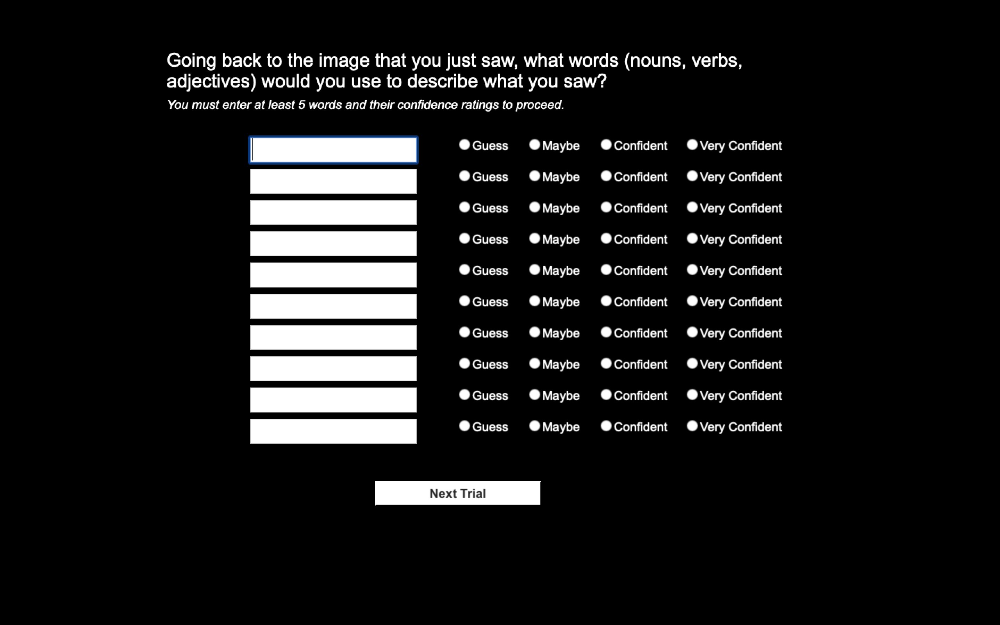

Block 1
Now, let's start the actual experiment. This block contains 20 images.
For your reference, here are the steps again. (Scroll down for more details)
-
You will see a cross at the center of the screen. Please focus your eyes on the cross and do not move your eyes.

-
In a few moments, an image will flash in front of your eyes, before a visual mask is displayed.
 
-
You are required to answer a question related to the image (not the visual mask).

If you are ready to start this block, press [Space] to continue.